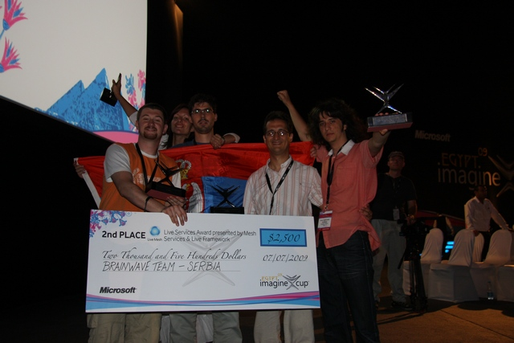

Brza izrada prototipova
Saznajte višeTelekonferencija
Saznajte višeHidroinformatika
Saznajte višeAktivnosti Centra

Obrazovne aktivnosti
Novosti


Objavljeno 10. jula
Drugi na svetu u pravljenju softvera
Objavljeno 22. maja
Pobednici IMAGINE CUP 2009 Serbia takmičenja
Objavljeno 15. aprila
RAPID PROTOTYPING Mašinci napravili grudnu kost
Objavljeno 10. jula
2009 Imagine Cup Pobednici - Live Services Nagrada - Drugo mesto: Srbija, BrainWave
Objavljeno 10. jula
2009 Imagine Cup Pobednici - Live Services Nagrada - Drugo mesto: Srbija, BrainWave
Objavljeno 10. jula
2009 Imagine Cup Pobednici - Live Services Nagrada - Drugo mesto: Srbija, BrainWave
Objavljeno 10. jula
2009 Imagine Cup Pobednici - Live Services Nagrada - Drugo mesto: Srbija, BrainWave
Objavljeno 10. jula
2009 Imagine Cup Pobednici - Live Services Nagrada - Drugo mesto: Srbija, BrainWave
Objavljeno 10. jula